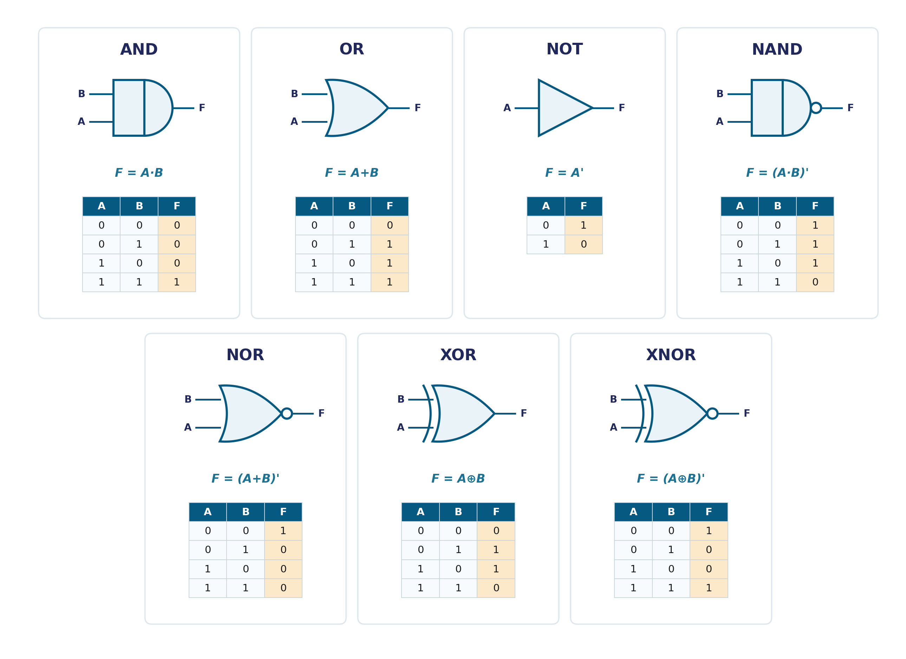
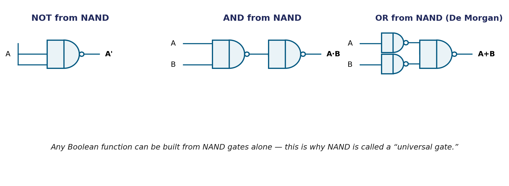

Binary Logic introduced AND, OR, and NOT as abstract operations on true/false values. This page turns them into physical circuits — the standard gate symbols you'll be drawing for the rest of this course — and adds the operations that make real circuit design possible: NAND, NOR, XOR, XNOR, and the one algebraic rule that ties them all together, DeMorgan's theorem.
A logic gate is the physical circuit realization of a Boolean operator. Beyond the three basic operations, four more gates round out the standard set:

Every gate symbol follows the same visual grammar: the small bubble on a gate's output means "inverted" — that's the entire visual difference between AND and NAND, and between OR and NOR.
DeMorgan's theorem is the single most useful algebraic identity in digital design:
In words: complementing an expression flips the operator (+ becomes ·, and vice versa) and complements every individual literal — not just the outer expression.
Check for A=0, B=1: (A+B)' = (0+1)' = 1' = 0 A'·B' = 1·0 = 0 Match! (True for all 4 input combinations, which is what makes it a theorem.)
NAND and NOR are called universal gates because either one, by itself, can build every other gate — NOT, AND, and OR included. This is a major reason real chips are built almost entirely from NAND (or NOR) gates: manufacturing one gate type repeatedly is far cheaper than manufacturing several different types.

A minterm is a product (AND) term that includes every variable of a function exactly once — uncomplemented if that variable is 1 in a given truth-table row, complemented if it's 0. Writing a function as the OR of all the minterms where it equals 1 is called the canonical sum-of-products (SOP) form.
F(A,B,C) is 1 for rows 1, 3, 5, 6 → F = Σm(1,3,5,6) F = A'B'C + A'BC + AB'C + ABC'
This form is guaranteed correct but rarely minimal — it's the direct starting point for the graphical simplification method on the next page, Karnaugh Maps.
| Gate | Expression | Output is 1 when... |
|---|---|---|
| AND | A·B | Both inputs are 1 |
| OR | A+B | At least one input is 1 |
| NOT | A′ | Input is 0 |
| NAND | (A·B)′ | NOT both inputs are 1 |
| NOR | (A+B)′ | All inputs are 0 |
| XOR | A⊕B | Inputs differ |
| XNOR | (A⊕B)′ | Inputs match |